安装
安装 TypeScript
如果你使用的 Visual Studio 版本还不支持 TypeScript， 你可以安装 Visual Studio 2015 或者 Visual Studio 2013。 这个快速上手指南使用的是 Visual Studio 2015。
新建项目
-
选择 File
-
选择 New Project
-
选择 Visual C#
-
选择 ASP.NET Web Application
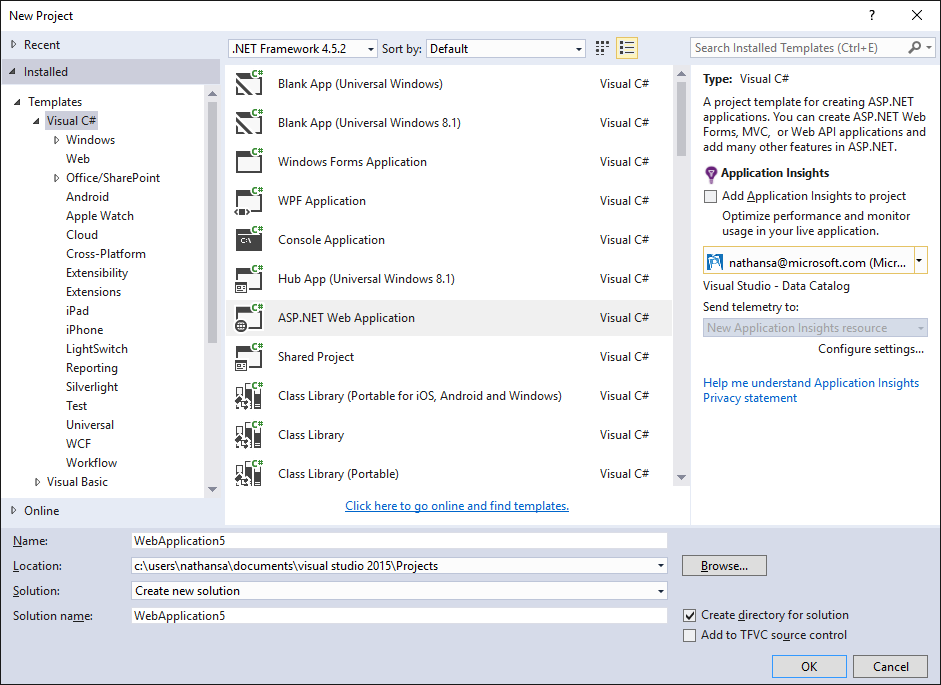
-
选择 MVC
取消复选 "Host in the cloud" 本指南将使用一个本地示例。 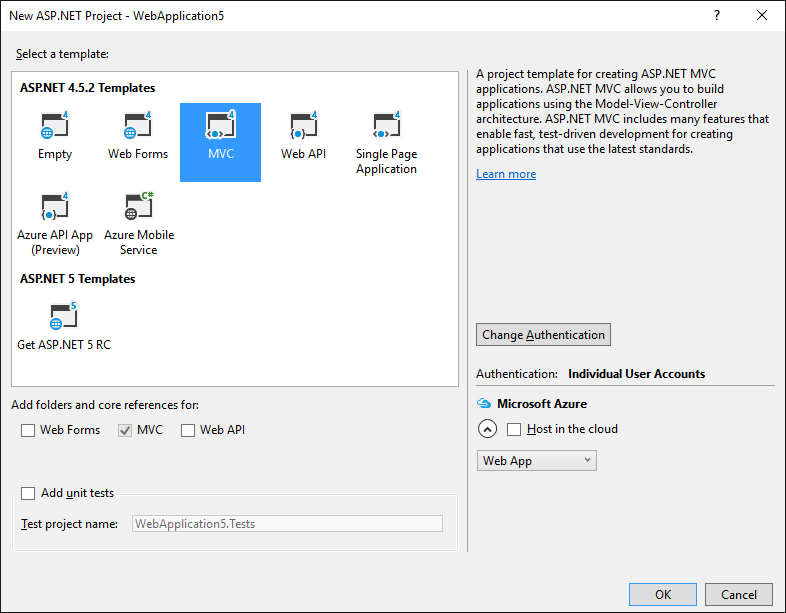
运行此应用以确保它能正常工作。
添加 TypeScript
下一步我们为 TypeScript 添加一个文件夹。
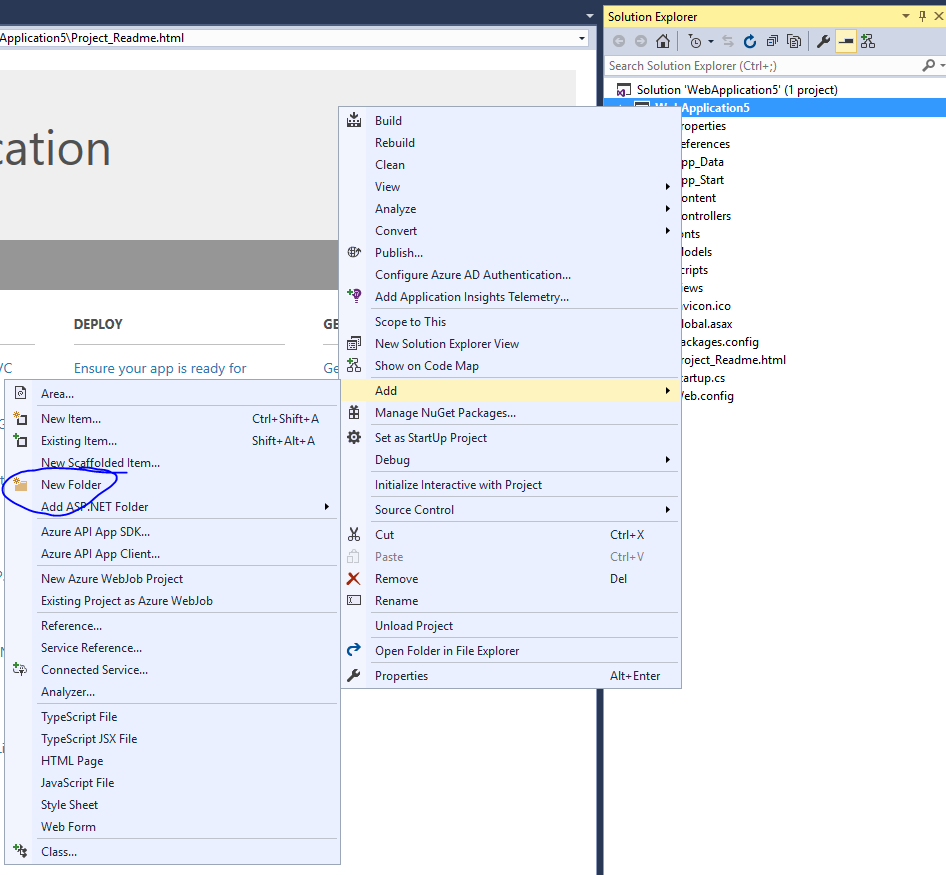
将文件夹命名为 src。
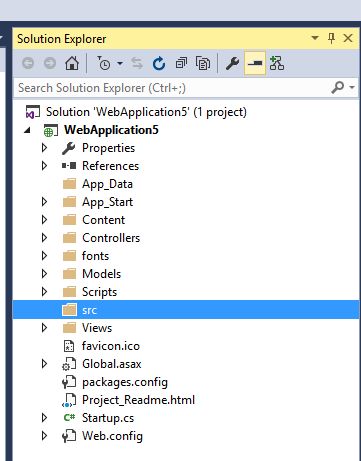
添加 TypeScript 代码
在 src 上右击并选择 New Item。 接着选择 TypeScript File 并将此文件命名为 app.ts。
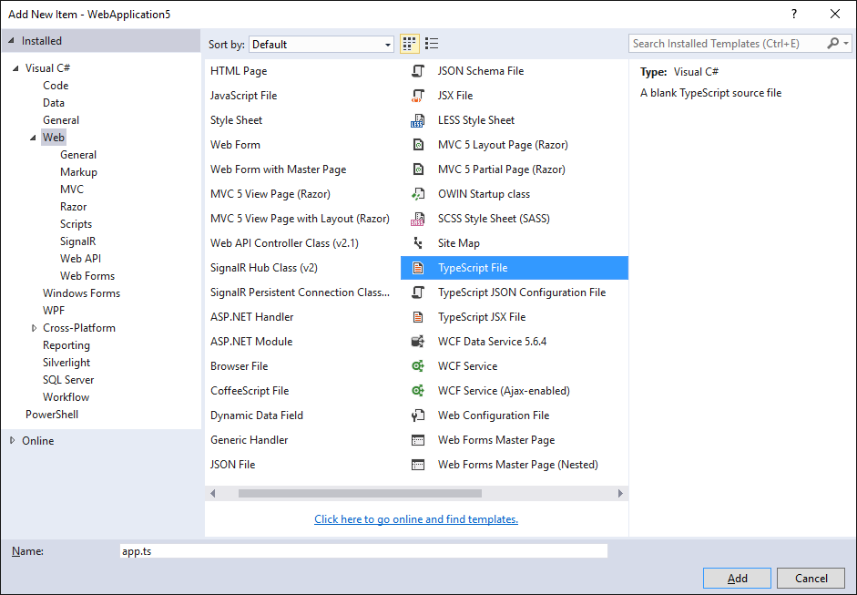
添加示例代码
将以下代码写入 app.ts 文件。
function sayHello() {
const compiler = (document.getElementById("compiler") as HTMLInputElement).value;
const framework = (document.getElementById("framework") as HTMLInputElement).value;
return `Hello from ${compiler} and ${framework}!`;
}
构建设置
右击项目并选择 New Item。 接着选择 TypeScript Configuration File 保持文件的默认名字为 tsconfig.json。
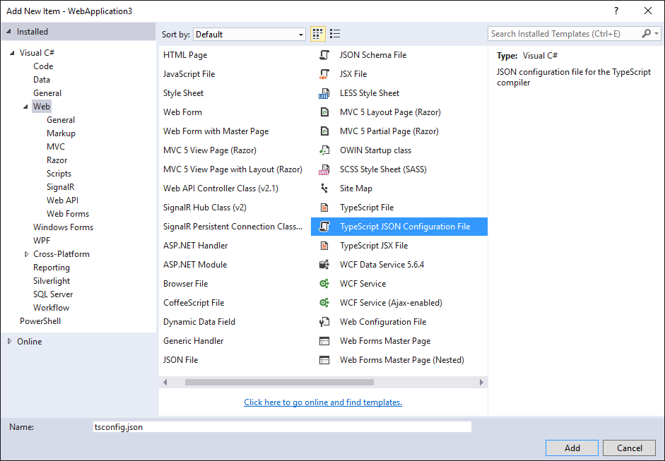
将默认的 tsconfig.json 内容改为如下所示：
{
"compilerOptions": {
"noImplicitAny": true,
"noEmitOnError": true,
"sourceMap": true,
"target": "es5",
"outDir": "./Scripts/App"
},
"files": [
"./src/app.ts",
],
"compileOnSave": true
}
看起来和默认的设置差不多，但注意以下不同之处：
- 设置
"noImplicitAny": true。 - 特别是这里
"outDir": "./Scripts/App"。 - 显式列出了
"files"而不是依据"excludes"选项。 - 设置
"compileOnSave": true。
当你写新代码时，设置 "noImplicitAny" 选项是个好主意 — 这可以确保你不会错写任何新的类型。 设置 "compileOnSave" 选项可以确保你在运行web程序前自动编译保存变更后的代码。 更多信息请参见 the tsconfig.json documentation。
在视图中调用脚本
-
在 Solution Explorer 中, 打开 Views | Home |
Index.cshtml。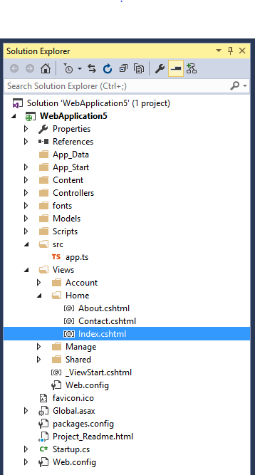
-
修改代码如下：
@{ ViewBag.Title = "Home Page"; } <script src="~/Scripts/App/app.js"></script> <div id="message"></div> <div> Compiler: <input id="compiler" value="TypeScript" onkeyup="document.getElementById('message').innerText = sayHello()" /><br /> Framework: <input id="framework" value="ASP.NET" onkeyup="document.getElementById('message').innerText = sayHello()" /> </div>
测试
- 运行项目。
- 在输入框中键入时，您应该看到一个消息：
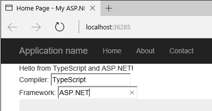
调试
- 在 Edge 浏览器中, 按 F12 键并选择 Debugger 标签页。
- 展开 localhost 列表, 选择 src/app.ts
- 在
return那一行上打一个断点。 - 在输入框中键入一些内容，确认TypeScript代码命中断点，观察它是否能正确地工作。
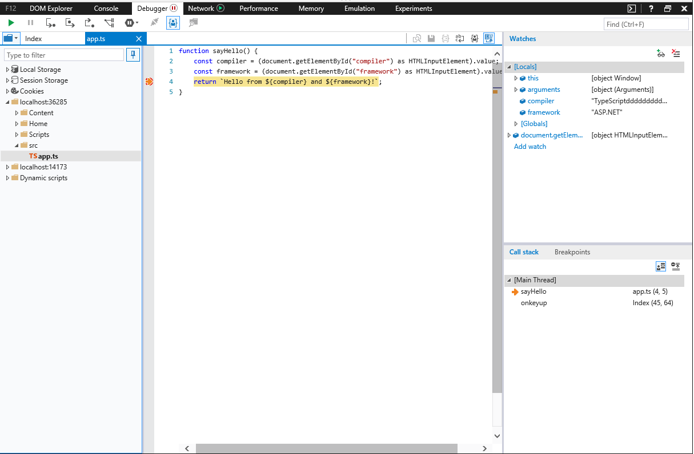
这就是你需要知道的在ASP.NET中使用TypeScript的基本知识了。接下来，我们引入Angular，写一个简单的Angular程序示例。
添加 Angular 2
使用 NPM 下载所需的包
-
安装 PackageInstaller。
-
用 PackageInstaller 来安装 Angular 2， systemjs 和 Typings。
在project上右击, 选择 Quick Install Package。
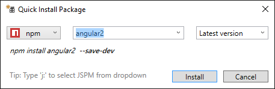 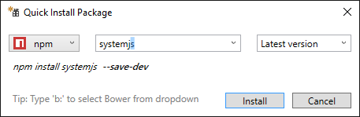 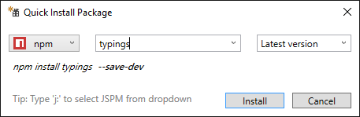
-
用 PackageInstaller 安装 es6-shim 的类型文件。
Angular 2 包含 es6-shim 以提供 Promise 支持, 但 TypeScript 还需要它的类型文件。 在 PackageInstaller 中, 选择 Typing 替换 npm 选项。接着键入 "es6-shim"：
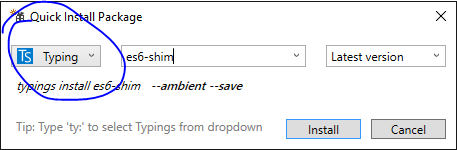
更新 tsconfig.json
现在安装好了 Angular 2 及其依赖项， 我们还需要启用 TypeScript 中实验性的装饰器支持并且引入 es6-shim 的类型文件。 将来的版本中，装饰器和 ES6 选项将成为默认选项，我们就可以不做此设置了。添加
"experimentalDecorators": true, "emitDecoratorMetadata": true 选项到 "compilerOptions" 选项段， 添加 "./typings/main.d.ts" 到 "files" 选项段。 最后，我们还将要创建新的代码文件
"./src/model.ts"、"./src/main.ts" ，也将它们添加到 "files" 中，现在 tsconfig 看起来像这样：
{
"compilerOptions": {
"noImplicitAny": false,
"noEmitOnError": true,
"sourceMap": true,
"target": "es5",
"experimentalDecorators": true,
"emitDecoratorMetadata": true,
"outDir": "./Scripts/App"
},
"files": [
"./src/app.ts",
"./src/model.ts",
"./src/main.ts",
"./typings/main.d.ts"
]
}
添加 CopyFiles 到 build 中
最后，我们需要确保 Angular 文件作为 build 的一部分复制进来。这样操作，右击项目选择 'Unload' ，再次右击项目选择 'Edit csproj'。 在 TypeScript 配置项 PropertyGroup 之后，添加一个 ItemGroup 和 Target 配置项来复制 Angular 文件。
<ItemGroup>
<NodeLib Include="$(MSBuildProjectDirectory)\node_modules\angular2\bundles\angular2.js"/>
<NodeLib Include="$(MSBuildProjectDirectory)\node_modules\angular2\bundles\angular2-polyfills.js"/>
<NodeLib Include="$(MSBuildProjectDirectory)\node_modules\systemjs\dist\system.src.js"/>
<NodeLib Include="$(MSBuildProjectDirectory)\node_modules\rxjs\bundles\Rx.js"/>
</ItemGroup>
<Target Name="CopyFiles" BeforeTargets="Build">
<Copy SourceFiles="@(NodeLib)" DestinationFolder="$(MSBuildProjectDirectory)\Scripts"/>
</Target>
现在，右击 project 选择重新加载项目。 此时应当能在 Solution Explorer 中看到 node_modules。
用 TypeScript 写一个简单的 Angular 应用
首先，将 app.ts 改成：
import {Component} from "angular2/core"
import {MyModel} from "./model"
@Component({
selector: `my-app`,
template: `<div>Hello from {{getCompiler()}}</div>`
})
class MyApp {
model = new MyModel();
getCompiler() {
return this.model.compiler;
}
}
接着在 src 中添加 TypeScript 文件 model.ts:
export class MyModel {
compiler = "TypeScript";
}
再在 src 中添加 main.ts：
import {bootstrap} from "angular2/platform/browser";
import {MyApp} from "./app";
bootstrap(MyApp);
最后，将 Views/Home/Index.cshtml 改成：
@{
ViewBag.Title = "Home Page";
}
<script src="~/Scripts/angular2-polyfills.js"></script>
<script src="~/Scripts/system.src.js"></script>
<script src="~/Scripts/rx.js"></script>
<script src="~/Scripts/angular2.js"></script>
<script>
System.config({
packages: {
'/Scripts/App': {
format: 'cjs',
defaultExtension: 'js'
}
}
});
System.import('/Scripts/App/main').then(null, console.error.bind(console));
</script>
<my-app>Loading...</my-app>
这里加载了此应用。 运行 ASP.NET 应用，你应该能看到一个 div 显示 "Loading..." 紧接着更新成显示 "Hello from TypeScript"。